<--- Previous Trip
America Trip Reprise - New York
So humans, we are back at it again with another trip to America. Iv moved to New York for 12 months, and this is gonna be my log.
1/9/2017
So I arrive.
Well, I don't think I slept much. Or possibly at all... Anyway got up and 6am and made it to the airport around who knows. I was sitting around in Shannon for 2 hours and all I remember thinking was, dear lord, Im only waiting for the plane and I'm already annoyed at all these American accents.
Contrary to the news, the security was almost non existent, I got asked a few basic questions and security checking was just minimal irish, nothing extra. The plane arrived in as a domestic flight, so not even a passport check. I watched Your Name on the plane, which is a reaallly good movie, but far too much of an emotional rollercoaster for a plane ride, I did not need that. After that I just sat there and closed my eyes for 4 hours hoping we actually landed.
Your defiantly in new york when you arrive. I think they keep the airport train station in a permanent state of chaos deliberately so your ready for the city. Anyway, once your actually through that station it calms down a bit. I suspect its a much friendlier city than it lets on. I made it to the Hi Hostel about 4pm, earlier than expected.
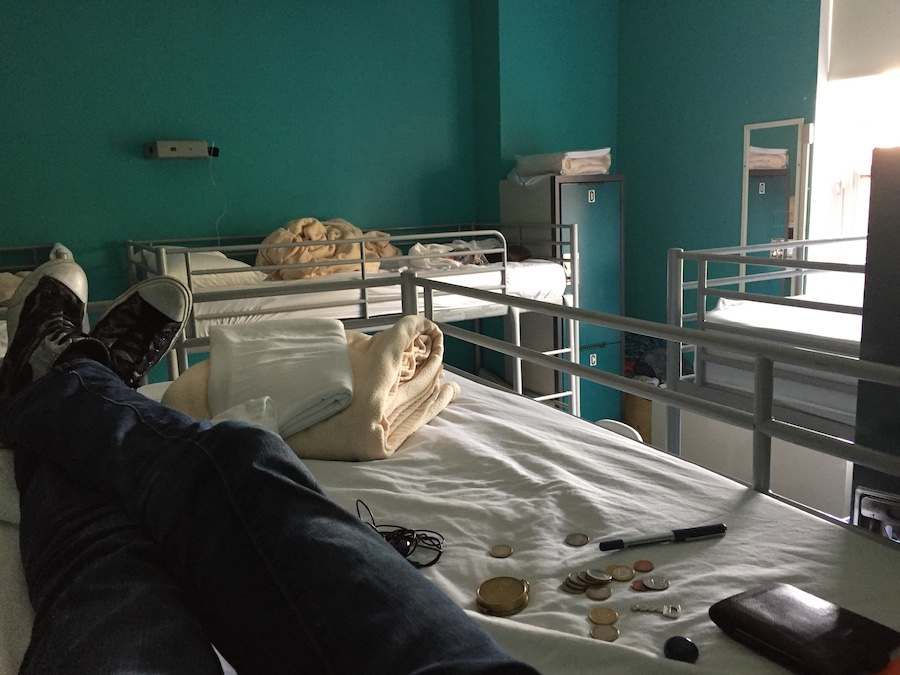
Here's a picture of my legs.
Ok so, yah what happened then? Well the usual I suppose. I went on the tea quest, which was easy since there was this weird lil shop across the road that has those sliding fridge doors you always see in movies of NY. They had one shelf that was perfectly stocked to make an upside down cake. Like it had exactly everything you need the make that cake, probably nothing else.
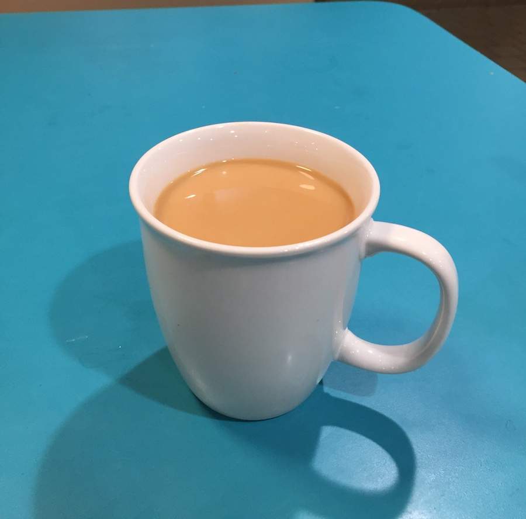
Heres a picture of my first cup of tea, EXCITING!
After that I went and had a ramen for dinner, with some really expensive import beer that I probably should have had when I was in Japan and it was not expensive and imported. At the point I was basically dead, so I went to bed and forgot ear plugs, but I was tired enough to sleep anyway. EXCITING!
2/9/2017
The basics.
Sorry buckos I didn't take any pictures today, Ill do better tomorrow. Went grocery shopping this morning, which is a very slow and confusing process when you don't know what anything is or recognise any brands. Like yogurt for example, the pots of it are the wrong damn size. Ether it comes in tiny wee little baby cups or a HUGE barrel of the stuff, theres no in between! Blueberries are very reasonably priced though. I got breakfast stuff which was moderately successful, too sweet though. It made me realise how EU-ish my cooking is, I had to go to 3 different speciality sections to get my normal stuff.
That was exhausting so I took a nap, and then walked to Colombia University to look for notice boards about housing. Its an acceptable university, its not quite UCC, but hey they tried. After wandering around a bit I found student services in a basement, they directed me to some building that I coudn't get into without an access card. So no luck there, but some information people suggested there might be some apartment postings on a bus stop down the road so I went there.
Well I couldn't find any bus stops, actually I think the bus stops here might be invisible since I haven't seen any at all, there was a phone box with a few postings on it though. I grabbed them, but it was too noisy on broadway to call any, so I went down another road, the house turned out to be at the end of said road so that was handy I guess, except it was really damn long and I wish I had found an invisible bus stop to get to the end of it.
Annnyyy way. The guy seemed alright, he was making an A shaped shelf for someone who's name began with A, which is a deeply inefficient shape for a shelf to be as you can only keep a small pointy object at the top. ANYWAY, it was a nice building, but the room had bad light, and also I assume his wife and kid lived there since he said it was his sons room who moved out. Well I didn't damn move out of my home just so I could move into someone else's, so no thank you.
After that I got on a train that started of on a platform above the street and ended up in a tunnel under the street. At the hostel I stole someones boiling water and made a very sufficient cup of tea while waiting for R. R is very kindly being a helping and welcoming hand in the city. Ill call him R though in case he would rather not have a public name.
We walked around for a long while looking for housing flyers and asking in shops and with doormen. We also went to a few colleges but they all keep their notice boards behind keycard doors. We did get some leads though, we also got a burger and I got an appallingly sweet milkshake that made my heart hurt. After that we met with his wife T, hung out for a bit and went for dinner. I had a hard time with that, sometimes my stomach just gets uncooperative, its annoying.
The hostel is as you'd expect a hostel to be, full of youths in shorts. As its Saturday night many of the youths have removed their shorts for something longer, put on shirts and run off into the wilderness to do whatever the heck it is youths do on Saturday nights. In a few weeks though the weather will change and anyone wearing shorts will perish, winter is coming youths.
Also its raining now and I'm very tired, good night!
3/9/2017
A day in.
GUESS WHAT! No pictures ;-D I literally did nothing today, that is to say I spent all day on the laptop searching for roomshares etc, which is turning out to be a much harder task then expected. I think maybe Ill have to start finding other people looking for roomshares and form some sort of consortium with a few of them to rent an apartment.
I went for a walk in central park since I felt like I should do something city-ish. Its as you would expect a large park to be. There are many people with buggies etc. There are moments when you can forget your in a city there, which is nice, there are also moments when a guy follows you around asking for money for 10 minutes...
By the evening I decided I wasn't really enjoying my time in the city and would need to make some friends. Ran into an Australian guy swearing at a door, that seemed like a very sensible thing to be doing in scheme of things, so we got into a conversation about retro tech and cameras. Somewhere in the conversation a guy from the Netherlands joined in, he's here to go to the US open, which is a tennis thing, each to their own I suppose.
We all agreed that the imperial system is ridicules and we are all very glad our respective countries are sensible and use the metric system. Upon this agreement we went and got dinner at an all night diner, I had pancakes and bacon.
9/9/2017
Seriously.. its only been 3 days since the last update..
So much... What even happened after the last day. All right, So the 4th, Oz guy and me went off to explore some park in the bronx on Labour day, never in my life have I seen so much litter on a beach, it was like 30% sand 70% rubbish. Still though the rest of the park was fine, and it was interesting to see how locals spend their time off, lots of BBQing.
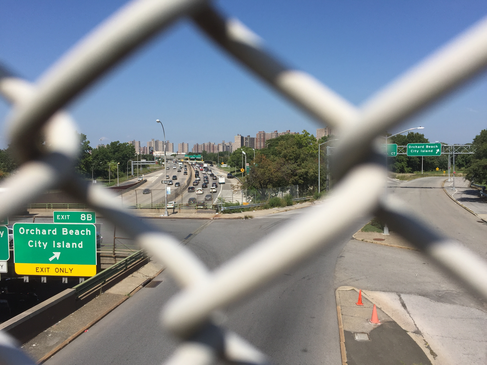
Above is some cars and a fence as seen from the bridge you cross to get to the park. We also went to this awesome tech shop called B&H thats run by some jewish church thingy. Its really cool, I got to try a pair of Grado headphones and it was life changing. Below is a picture of a small armada of camera tripods.
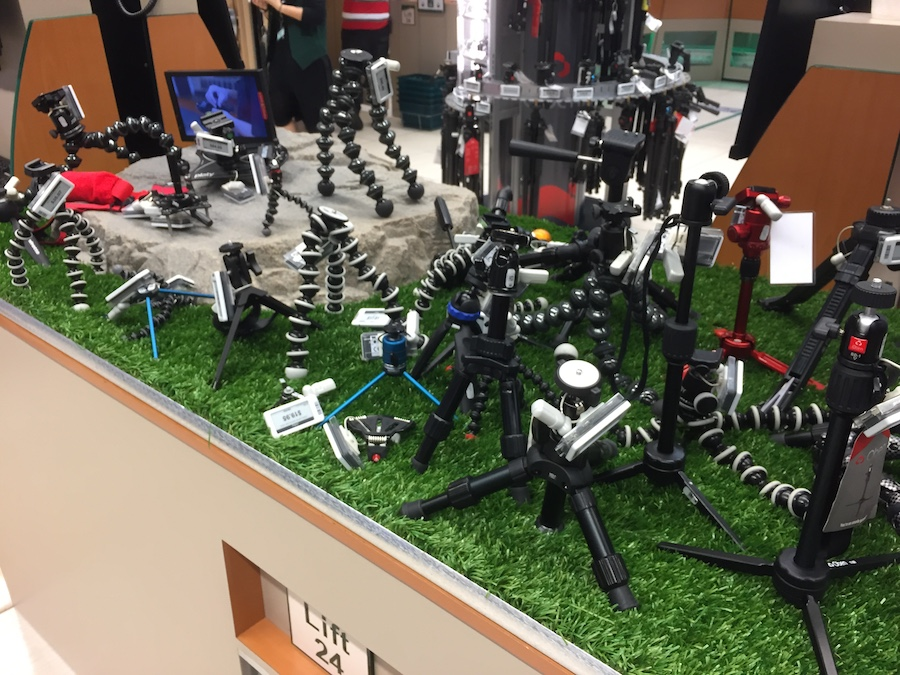
There was also this homeless woman who reaaallllyyy liked some statue and gave us a detailed and very professional tour of it, describing each each creature and its meaning and the artist who created it. Being New York it became apparent the tour was not free and ended up costing a few dollars, but honestly it was worth it, I would recommend hanging around that statue until she shows up if you're ever in the city.
The next day, 5th? So I went on this thing called Jerry's Grand Tour. Jerry is an interesting person, to start with he's 80, has a laugh like the joker crossed with wario, goes off on endless tangents about eating your greens not smoking and how bad trump is, takes pictures (with a film camera) of random people on the street constantly (but only if they have an unwashed face and don't smile), tells everyone to get married, breaks into irish folk songs at every free moment, makes and awful lot of "accidental" sexual innuendos, dresses in a shirt and cap like a 1940s school kid, literally everyone from bankers to construction workers seems to be friendly with him. AND the walking tour lasted 13 hours, of walking, 13 hours.
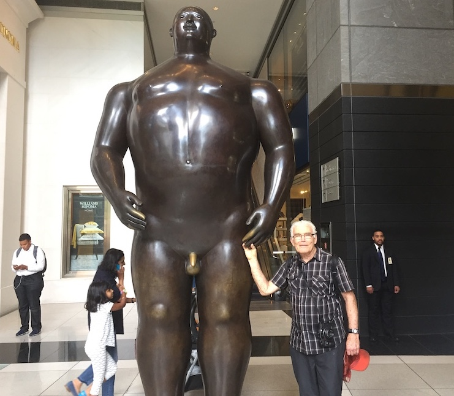
Here is a picture of Jerry, he chose this particular statue to pose with, at no other point did he pose.
I actually went on 2 of his tours, I like him allot. One was 13 hours, the other was 7. We went to: Central Park (all of it), Grand Central Station, Wall Street, NY Stock Exchange, Times Square (Day and Night), Walked Brooklyn bridge, Brooklyn Promenade, Rockefeller Centre, A few random banked he liked, Looked in every window of the Gucci store because he felt like it, We had to sit in silence in St Patricks Cathedral for like 20 minutes, Little Italy, Staten Island Ferry at sunset, 9/11 Memorial Site, World Trade Oculus centre, A few random parks, A few random streets, saw some buildings of note, such as the old steamship HQ, A building that looked like Paris, the site John Lennon was shot, Brooklyn Heights, City Hall, SoHo, Chinatown...
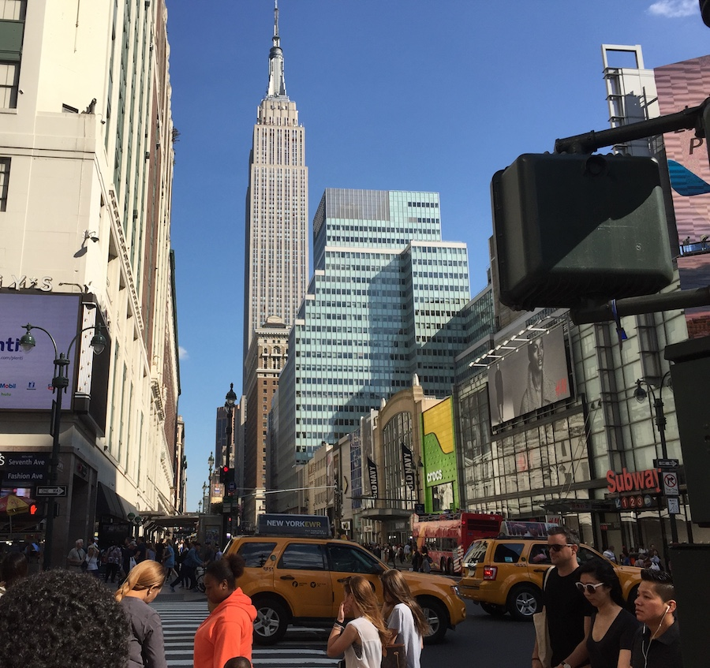
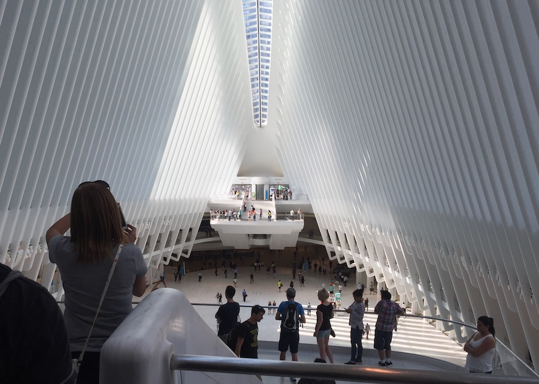
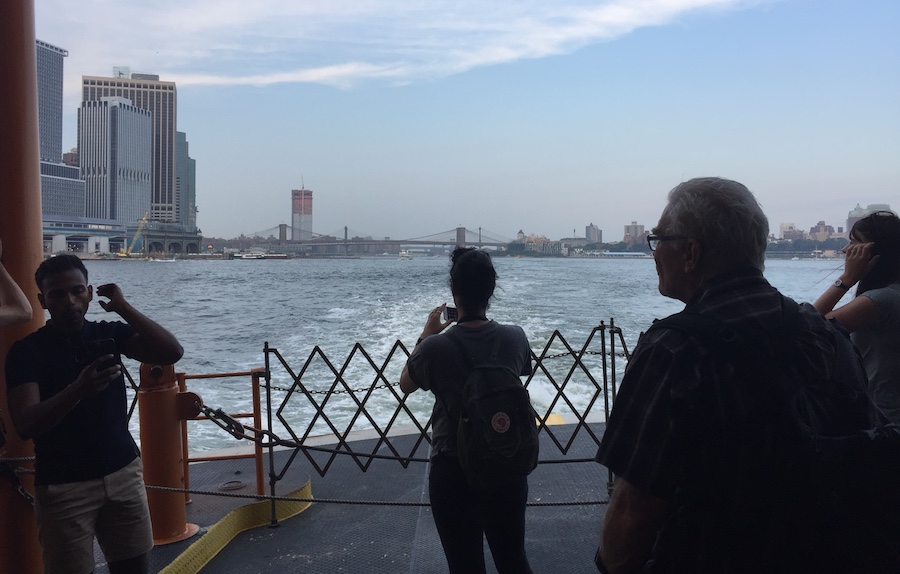
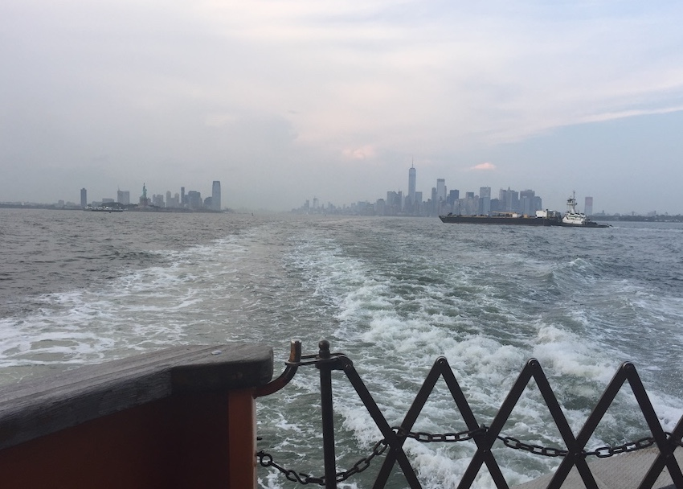
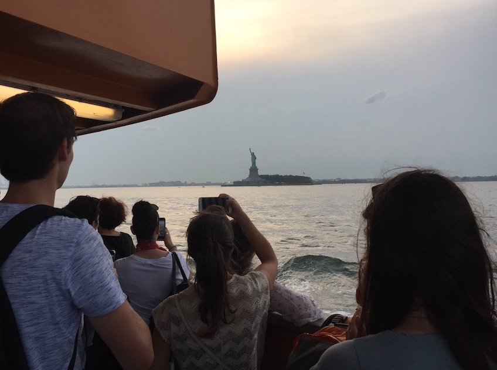
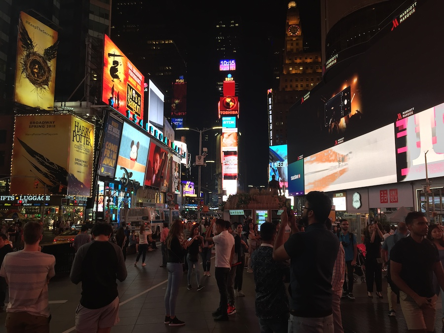
SO that was a whole buncha crap, I feel like Iv lived 3 weeks in the last 3 days.
Anyway, I went to the museum of natural history (8th) and was accosted by a woman telling me that geology was proof of god, I told her that I found the idea of a human-like god to be naive and pretentious. I also went to a planetarium showing, its was a bit over the top and gave me motion sickness but it was pretty good too. I spent a while looking for an office to see if they did internships, but no such luck (IT WAS A LONG SHOT BUT YOU GOTTA TRY).
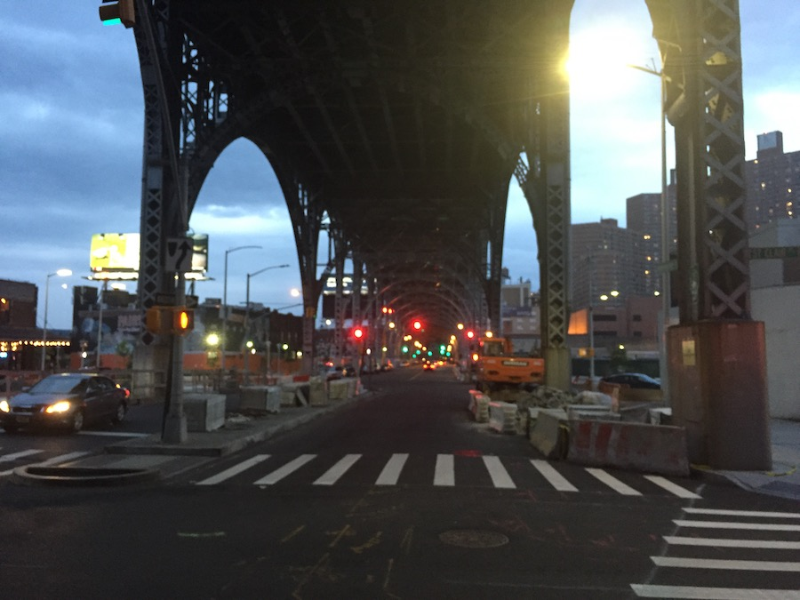
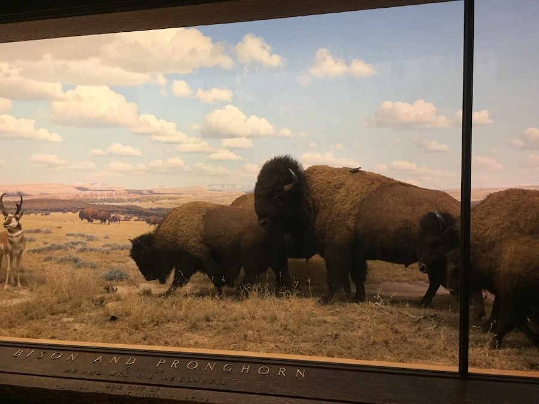
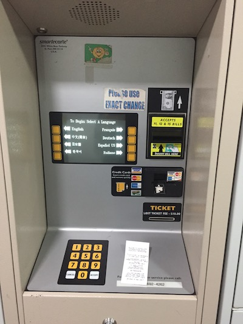
That lock system is amazing, it must be running on some sort of 386 system judging by the interface and the burned in CRT monitor, it controlled some sort of central magnetic locking system on the hostel lockers. Also the bridge was cool, sorry its out of focus.
So I'm on Staten Island for a bit now, but Ill be back in the city centre soon. Its nice to get a break out here and collect my thoughts, I think today was the first day I started to feel a little like I lived here and less like a tourist, I suppose because I did living things like eating and cloths shopping. I feel like I should say Iv learned something, or some meaningful thing, and Im sure I have, but look, regardless of what happens in NY, you have to eat lots here, I call it a red meat city, because you can survive it just fine, but you need to eat allot to do so.
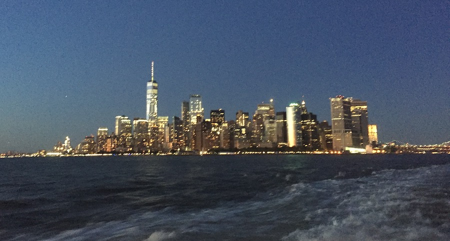
I saw some punks with red and blue mohawks today which was great, they didn't have a boombox, but Im sure they will get one soon to complete the image. There was a pretty great break dancer, a girl singing Ed Sheeran songs in the subway, a few people in like full African garb, herds of wall street suit drones, a guy shouting about sinners in the ferry station, a homeless guy who did a poo on the subway, rats everywhere, squirrels everywhere, people doing like kung foo practice in the street thats apparently banned in China, really friendly locals that help you when you look lost, endless people of every shape and size and tone and status. Allot of people in the hostel seemed upset and drained by it all, but I love it.
Here some random songs I like at the moment:
16/9/2017
By the time they say its cool its not anymore.
Ah you know, stuff happened, there was the 9/11 memorial day, I spent all morning wondering why the flags were all at half mast, then I was like oh yah. They have a great light beam thing they do, but it does not actually come out of the footprints of the towers, which was disappointing. The mood was strange there, people were not sure if it was a party or a funeral. There was a bunch of very drunk people from the NYFD watching the lights from the Staten island ferry.
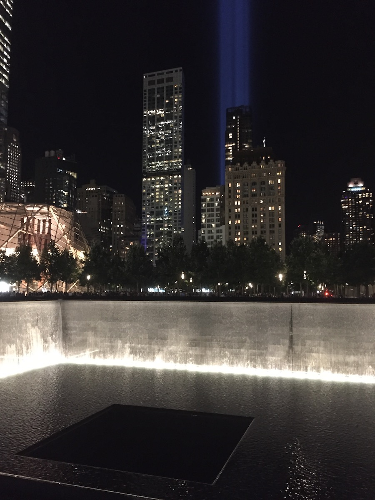
That morning I was looking at rooms, the first was wayyyy out in some distant stretch of Brooklyn. They guy there was pretty cool, he was a vaguely new agey Indian guy, we had a long talk about smart cities and the internet of things. He got really interested in glitch hop when I showed him some, and he'd also had tea with Steven hawking. The next room was next to central park, the guy there was like a computer science teacher graduate type thing. Anyway, I didn't go for ether of those for various reasons.
Ok so the 12th, I saw another house in Brooklyn, there was no one there when I got there, but the door was unlocked so I just went in. It was an empty apartment, I considered just stealing the keys and taking over the apartment but I guess that might not work out. Someone else showd up too and I think they had a similar plan, so I decided to see if the door to the roof was open, and it was. There were to people drinking wine on the roof claiming to be travel therapists, we chatted for a while and they said they didn't think it was the right place for me.
I have to agree, every time iv gone to Brooklyn its felt... off.. its just sort of an unpleasant feeling in the air. Theres always some tall guys in shirts having some sort of condescending conversation about someone. I think the place is seriously overrated and I have no wish to go back. I had one more room viewing there, but the train did some weirdness and took me in the wrong direction and I missed it, I took it as a sign.
On the 13th I went back to Manhattan to stay at Jazz on the Park hostel, what a friggen joke of a hostel. Seriously never stay here, that said my rooms nice and so far Iv had a few nights where its just me in the dorm, Im not really surprised, the rest of the place is a mess, my internship hunting has been seriously hampered by the lack of internet here. Oh I met R again too and we had a nice walk about.
ANYWAY, on the 14th I met up with C who's an older guy who lived in NY for many years and so was someone to meet for reasons. We went to Irish places like the consulate and Ireland house at NYU. It was nice and all, but all some lady at the consulate had to say was I wasn't dressed well enough. OK THANKS BYE.
And so on the 15th, I was feeling a bit down about the trip as a whole, NY was not working very well, Brooklyn gave me the creeps, the consulate was just typically Irish. So far the whole place was far too much yuppie, not enough interesting. So I took a day to forget about rooms and internships and went exploring retro games shops.
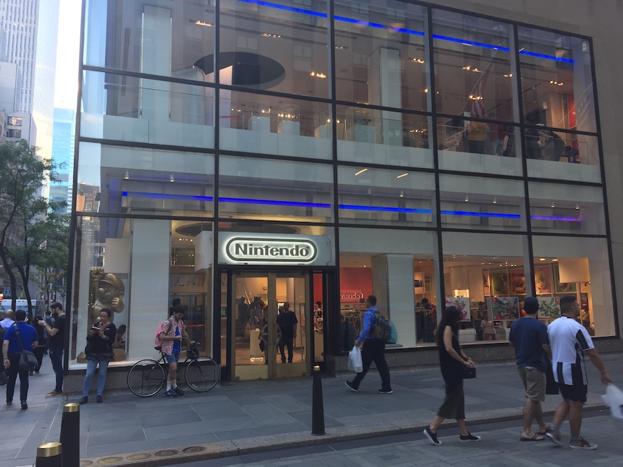
Ok so the first is not a retro shop but its pretty cool, they have a whole bunch of Nintendo stuff and unique stuff for sale, as well as tournaments and stuff, Im crap at playing games so tournaments don't means much to me, but Im sure someone enjoys them. It was a bit manic there so I didn't stay too long.
Down the roads a retro games store, its alright, they have some stuff, it was all stupidly expensive, If I could sell my collection at their prices I could fund this whole trip 5 times over. I asked if they knew a good place to get a Walkman and they were just like "WOAH THATS OLD MAN". Anyway, the next store was Waaayyyy better, it had some incredible stuff, was like an Aladdin's cave.
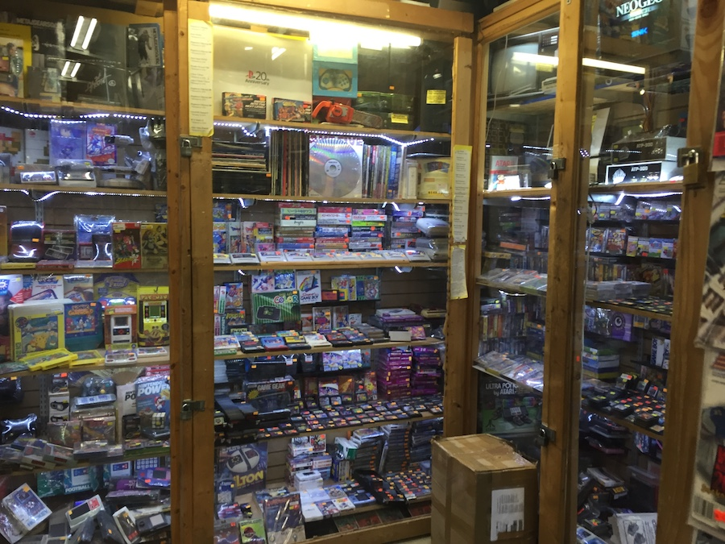
Yah ok but I spoke to the guys in there for 30 seconds and I had no desire to talk again. NEXT SHOP! Ok so this was the one! I didn't take any pictures cus it felt rude. But its called 8 bit and up, its not signposted but they have a statue of Lara Croft in the window. Its basically a bascment filled with old arcade systems and computers and junk. Its not set up like a shop as such, there just some guys there playing with stuff, the owner had dreadlocks. It was like a damn scene out of Hackers!
Anyway, I spent a while there testing out games, there was like a pile of filthy R.O.B.s, actually everything in the store was filthy, it was great, there was a Vectrex, but it was still being repaired. I think my in store status went up quite a bit when I pulled my DMG01 gameboy out. They had a prototype backlit gameboy made by Nintendo, plus the prices were really good, I got F1 Racer for $5. I'll be back!
The subway ride back to the hostel from there was like an hour, so I got off at times square to break it up. One thing Iv noticed is that, during the day New York is about.. 6-7/10 but at night its 10/10. The subway gets less packed, the people get more interesting, the buildings light up and get more impressive. You can put in earphones, put on some Fatboy Slim and its like being in blade runner. I got back to the hostel and watched Teenage Mutant Ninja Turtles and ate M&Ms till 1am.
So the 16th, today. I WAS having a slow morning, then I noticed an email I missed in an account I don't check often. It was telling me to go to an open room in chinatown at 12, it was 11, chinatown was 55 minutes subway ride away. I like ran out the door. Well I was late but they were nice and let me see the place anyway, it was a good space, but the area, I loved the area! When they say chinatown, they really mean it, chinatown in SF felt more like a tourist thing, but this was the real deal. The apartment was like next to a big stone subway overpass and there was a junk market going on under it, it was mayhem. I hope they let me have the room. It was the first time Iv gone to a place and been like Yep this works!
I went to 2 other places, they were meh, one was lower east harlem, the people were cool, but the area was just dead. The next was nice area but it was at the top of central park and the apartment was like owned by a couple, and id prefer to be in a place thats not lived in by the owner, since that means youre not on an equal footing. So no chinatown was friggin cool. Anyway back up at 106th street there are a bunch of white guys with acoustic guitars trying to rap, dear lord.
SO thats my story, till next time.
26/9/2017
Almost normal
Where did 10 days go? What even happened? I could have gotten the place in Chinatown, but I went with something else. So I suppose thats the news, I actually found a place! Its in Soho, its a really fancy area, there is an apple store on our street, and a MoMA store, and, well lots of expensive stores that have cloths that are too cool for me.
Its really nice though, the building in bright and clean, its near to a whole bunch of subways, there is a 24 hour shop right under it. They charge $5 for a bar of green and blacks... There'ss also this really nice Italian restaurant around the corner with actually reasonable prices by NY standards, its a shame I have about as much appeal with girls as a bag of bricks because it would make a great date spot. Oh and like the best pizza slice place on earth, its really good, people travel across the city to go there for lunch.
So its all a little expensive, but Iv travelled to so many areas and this one just beats the pants of anywhere else, its like a safe haven in the chaos. Alright, I guess that all took a few days to sort out, I saw the premiere of the new Star Trek series with the NY star trek group. That was an experience for sure... Everyone was reaallly American, and they had some star trek prom queen type woman going around screaming and live streaming things and then screaming more, they live streamed asking everyone what would their ideal death be as a captain and every one had like crazy heroic answers and I was like.. At home.. comfy in bed after a long successful career. Actually they all liked being very loud, and there were ad breaks like every 15 seconds, Im never watching TV here again.
I went to 2 different coding meet ups, one yesterday and one today, the one yesterday was weird, it was run by some British guy and felt a bit like a cult for some reason... The second one I liked allot more, we were just a bunch of people in a room trying to figure out how to use Ethereum which is like a sort of crypto currency global processing network, anyway the people there felt more down to earth. It was also the first time I didn't tell anyone I was from Ireland, I just let my accent slip to sound a bit more American and no one even questioned it.
Heres a cool gif I made standing at the top of the Rockefeller centre a few days ago. They charged $40 for me to go up there, so I was damn well gonna make sure I got my moneys worth.
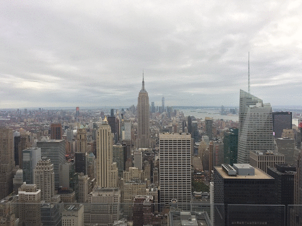
Oh the apartment again, I didn't find it through an apartment site, I stayed in an AirBnb run by a Colombian woman and she passed me on to the apartment owner and they sorted a good price for me. The owner is Bulgarian I think. Iv found in general everyone who has helped me out here has also been foreign, and also came here when they were 23, and are now in their early 30s and kinda look at me like, I remember when I was in your place. The other 2 people sharing the apartment at the moment are a Korean girl who's really quiet and a bit like a ghost. And a german guy who I haven't actually seen in a few days.
One of the places I stayed had a door open to the roof, now if you see a door open to the roof, you go up it, you don't ask questions! Here was the view from one of them, the china town house did have a roof, but you had to climb up a weird ladder that was ducktaped to the staircase and then you could sort of clamber out a skylight onto the roof, but it was pretty crappy and there was no view at all.
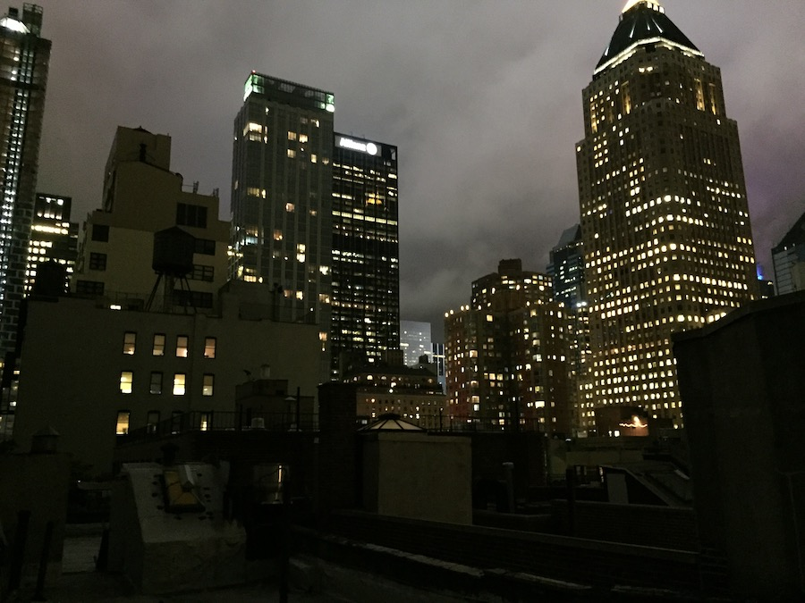
I applied for a social security number too, so that should arrive in a few weeks and I can get a bank account and stuff, I gotta find the fanciest bank I can. I spent like the last half an hour trying to find the name of a cool bank I saw, but its not showing up anywhere. The social security place was fun, you had to sign a bit of paper saying you were a legal alien and then you got to play musical chairs, but there was no music, but every few minutes everyone had to shift 2 seats to the left and then jump a row. And then you got a ticket and could go and apply for your number.
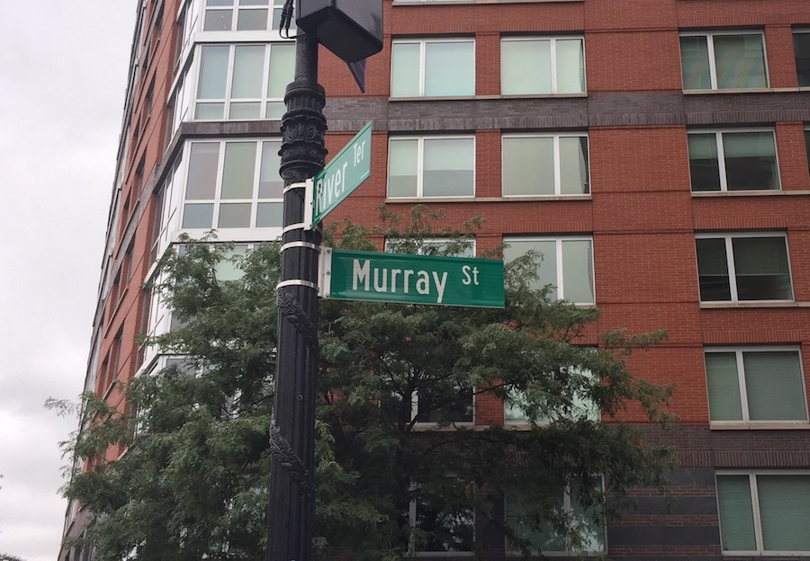
Its been like 30 degrees heat and I'm dieing, but I think its getting colder now. I went for a job interview too with some startup, but It didn't seem that convincing so Im not sure about that one. They wanted to make like a cross over of kickstarter and meetup, but sort of not really. That and they seemed to be doing like portrait photography as well, and I was just thinking like, just do portrait photography and forget the startup stuff, its a great business model, everyone in NY needs good portraits for their linkedin profile and stuff.
OH OH OH, Ok heres a story! I was in the supermarket about 10 minutes away from the apartment! And I was looking at shelfs as you do, and then I was like Oh look birds custard, thats weird, of all the things for me to find in America, Birds custard powder. So I walked off, and then I was like.. I really want the custard powder, I have a weird thing for buying tins of birds custard powder don't ask me why. So I looked at the shelf and was like hang on I recognise loads of these things, look they have ginger nut biscuits thats good to know. Then as a joke I was like I wonder if they have.. So I looked more and my eyes ran over PGTips and I was like yah ok british import section and then I was OMG FUDIWHDIUS WHAAAA. And I almost did a dance which is saying something if you know my temperament.

Boxes of it just sitting there, ready for the taking! Multiple types even! They even have that other one that starts with an L but I wont pollute this blog by mentioning its name. Anyway, that was an exciting day, what a life.
I think thats about the bulk of it, went to the metropolitan museum of art at one point because it was raining and I was next to it. Just have to find an internship now which is really hard. But you know, as long as I find something before I'm kicked out of the country Ill be happy! Went to the brooklyn flea market which was allot of rubbish for more than I like to pay for my rubbish, they had like instant sodapop mix packets from the 1960s, like those things are bad enough when you buy them today but 50 year old ones.... Anyway, I think tomorrows gonna be a slow day, Im sooooooooooooooooooooooooooooooooooooo tired, I think its the heat.
So far my favourite things are eating Chinese take away in the take away place while watching all the yellow taxies outside and listening to U2 at midnight. When 2 subway trains drive at the same speed next to each other and you get to watch this other world going on in there and they are watching you thinking exactly the same thing, though most of them are stuck in the moment and don't notice.
1/10/2017
My backpack had an adventure!
Ok heres a little story, I went out for a general day in the city and to get some cooking pans for the apartment so I could make some pasta for the first time in like 3 weeks. I guess I got pretty excited about that because it was only a few hours after I got home that I was like... Wheres my backpack... Oh.
Well at least it had been a nice evening, I took this picture at sunset, JUST BEFORE I LOST MY BELOVED STUFF FOREVER!
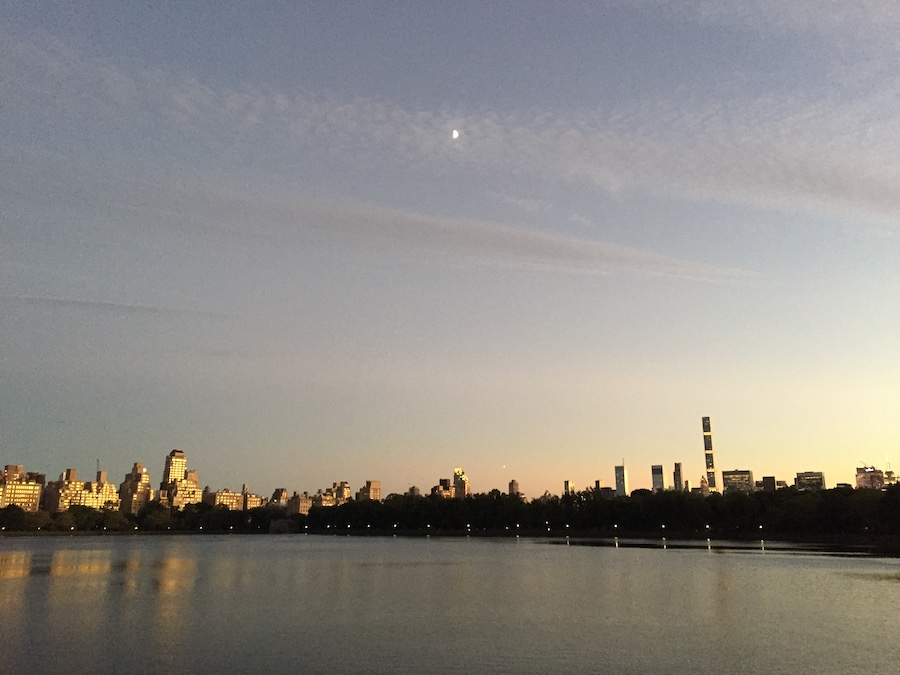
I had mixed feelings, there was nothing really important in my bag, it was just stuff and stuff could be replaced, had my custom gameboy but even thats replaceable. Still though I was unsettled, those things had been my companions for this whole trip and I felt adrift to be without them.
So I got up at 5:30 the next morning because I couldn't sleep and I went out looking. It was the first cool morning in weeks, I got to wear cloths that suit me better than a t-shirt does. I wasn't really expecting to find anything, but just after 8am there it was, thrown into the back shelf behind the counter at a T.J.Max store, I'd left the store the night before just before closing with a 10 piece set of non stick pans but not with my bag. Everything was inside, untouched, I was kinda in shock... I genuinely had never expected to see it again, the people in the shop could have no idea how important it was.
I suppose thats kind of the thing, how a tiny detail of your life can be such a large part of someone else's. Perhaps thats why we should deal more kindly in all things, or something like that. Anyway, I went to the park after, and read a bit more of a book I thought I'd lost.
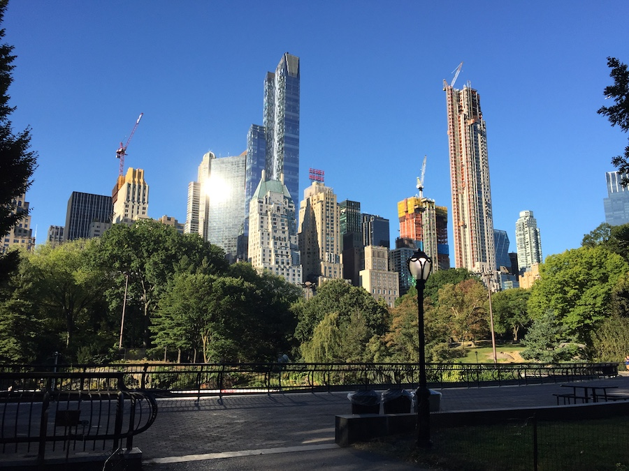
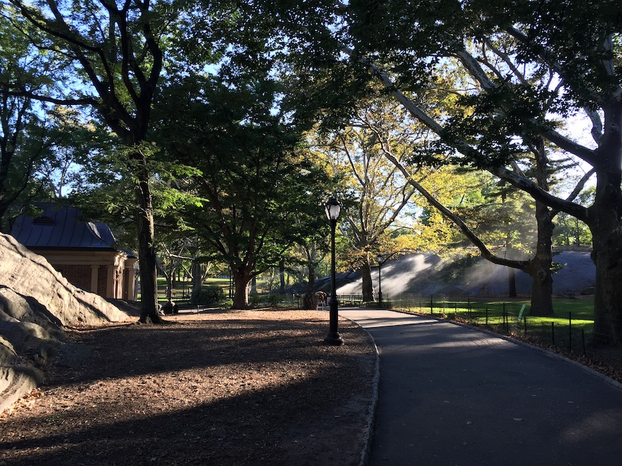
maple
4/12/2017
A long long time ago
Hello Universe, its me again, has it been a while? Thats a rather subjective question when you yourself have an inconsistent implementation of time. Anyway, it was time to update my blog so here I am. Where should I begin! There have been so many adventures since the last post. Like the time I complemented the nan bread at a restaurant and they brought me into the kitchen to stick my hand in the oven. Or the brief time I was a subway superstar and people took pictures of me playing my gameboy in semi 80s cloths. Or that crazy interview I had that turned into some sort of smokey cigarette conversation half way through then poofed away with the smoke? Shaun the sheep came to stay for a week, Airbnb guests started arriving too, the one here now is a rancher from texas who gave me a signed copy of his book of photographs of 70s rock stars. Oh and my grandad died somewhere in the mix there too.
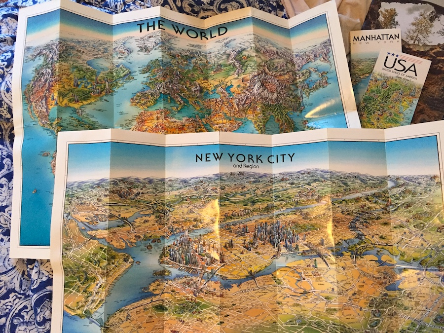
I found these maps in the dusty corner of a news agents, I think they are pretty great, they had been there for years, they are all old editions, I guess no one buys maps anymore, so I told the guy at the counter he should give me a discount and he game me $5 off. The guy standing behind me laughed when I asked, but little did he know asking is the WAY!
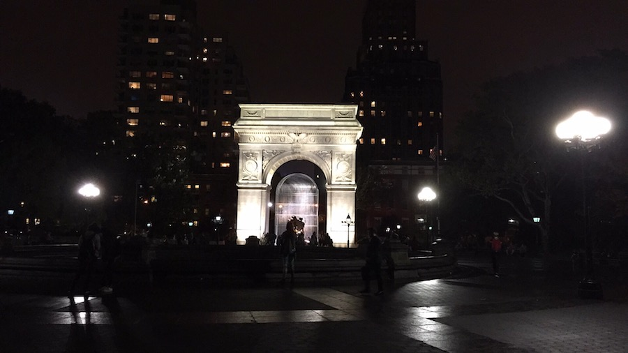
A few days later I tried to host a meetup for quirky web design, I sat there for an hour but no one turned up. I suppose there were a lot of factors that added to that, I wasn't really in the mood and people freak me out, so I was pretty relieved when no one showed. Though It reminded me of that time I tried to have a Halloween party the same day as a friends birthday party and everyone went to THEIR party instead, seriously the guy got born on Halloween he damn hogged the day EVERY YEAR! Anyway, I took that picture afterwards, it was cold and raining, but I went to sit in the park anyway, having grown up in Ireland Im never without a raincoat on hand.
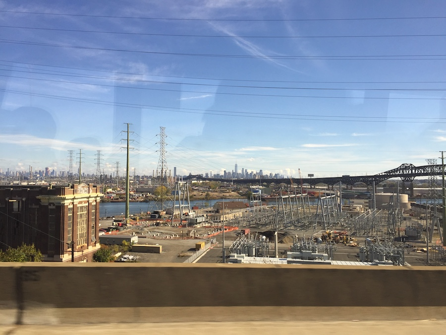
That weekend my dad came to the city with lots of notions and meetings and plans for things. I thought it would be nice, but it was mostly exhausting and stressed, and the few down moments were filled with talks about finding internships. We went to see blade runner, which is possibly the most important movie of the decade, I went to see it twice! In IMAX! NY is amazing, you can just be sitting there at 10 pm and say.. AMMA go see a movie, and BAM.
We went to NJ for an evening of looking at a box of business cards, there was a little shop that sold apple pies.
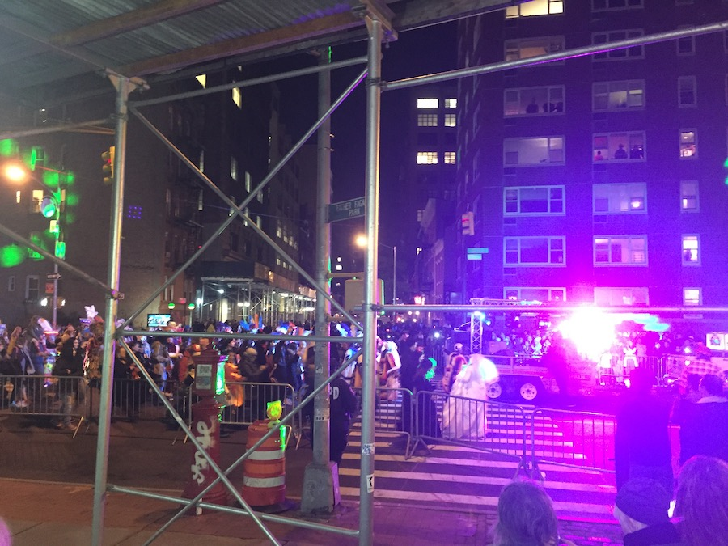
And then it was Halloween! GOODNESS HOW IT GOES (Nicholas Nickleby quote) Our street was closed off by the guards, so it was a private viewing stage for us residents. Everyone stood on the steps and people threw tshirts at us advertising some website, I gave mine to goodwill. One person made hot chocolate. The parade was OK, it was not as good as Corks, it lacked real organisation and the rout was not very interesting. But it was what it was :P
The good news is the next day my problematic roommate moved out, they left this charming note!
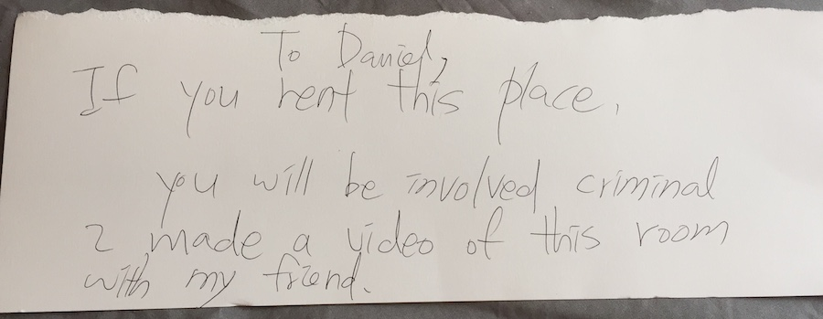
Look at this spectacular view! What day is it... Hmmm 2nd of November. And we are only a quarter of the way through the pictures I have for this post! Im not sure much happened around then, at least nothing that jumps to my memory, life as usual for a moment!
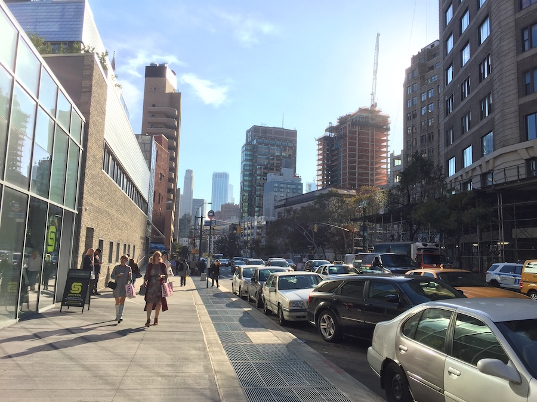
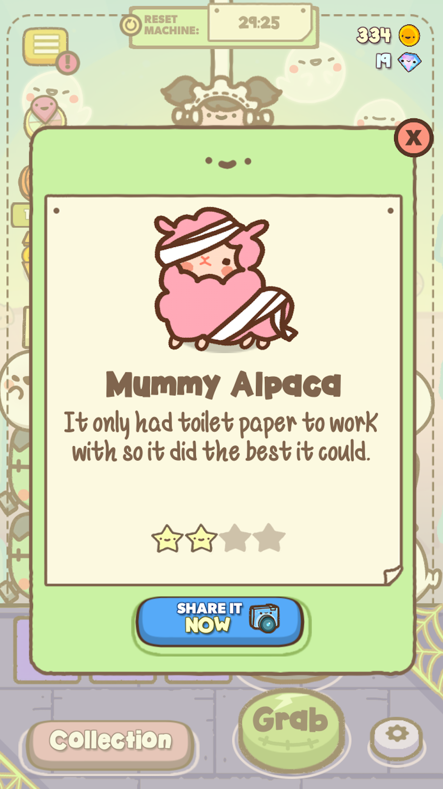
I went to a Pokemon meetup on the 5th. The idea was that everyone would meetup before hand and chat or something. It was horribly planned and no one could find each other, so I never saw anyone else there. These meetups huh? If there is one thing Iv learned its that the internet does not work very well! All these web services, they try to make things easier, but roommate finding sites Nah, meetups Nah. Airbnb and facebook are big because they are some of the few that actually work. I got this cool Pokemon card though so Im happy.
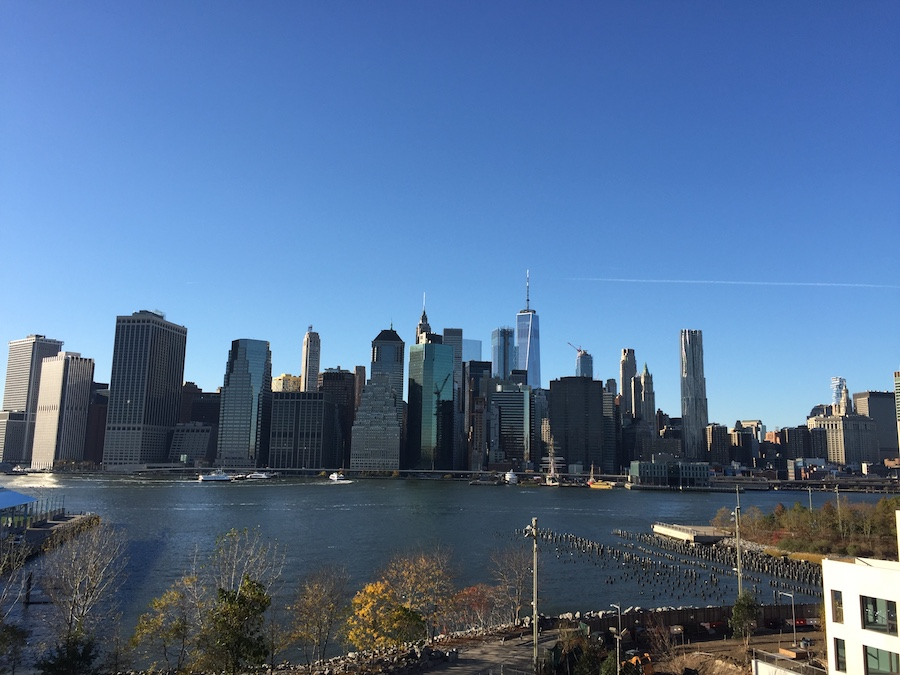
I suppose it was around this time I stopped talking to a friend who's been a constant feature for the last few months. These things happen, people change or don't see eye to eye. When you don't have a whole lot of people in your life though you notice it.
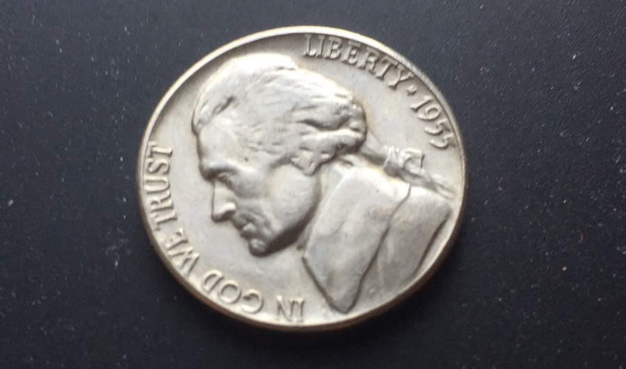
On a TOTALY UNRELATED NOTE, how friggin old is American money, look at this coin! Its dated 1955, thats like a whole other world away. You know, when everything was perfect and people only owned 1 TV, I don't have any TVs though I guess I carry one in my pocket so thats pretty rad, I bet that coin never saw that coming when it was minted. Oh no we are back to this damn time theme again, Im delaying talking about the next section but I guess we better move on :P
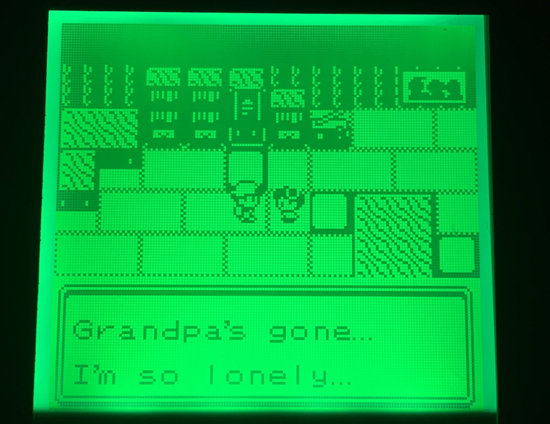
This came up on the flight back to Ireland for the funeral. I swear, that gameboy has a soul, it knows things. So you don't realise what a loss feels like until it strikes close to home. This was the 3rd grandparent Id lost, but the first that was really close to home. Thats not to detract from the others, but this one was different. It was this moment, when all the junk of a persons life is still where they left it, but that person is gone. Theres a kind of useless sorrow, where in an instant, the basics of life like toothbrushes and pots and pans loose their purpose. Iv always over empathised with inanimate objects. Its stupid because, you can see how none of them mean anything but they mean everything too. On a Monday, you can walk past your printer and by Thursday its printing out grainy black and white pictures for your service and you're gone.
I wrote this to a friend when they asked me to explain it: Its like falling, or the quiet of a house when your friends have just left, and the mess of all the fun things you played is everywhere but they’ve just closed the door and that fun is over, except this time you cant look forward to ever seeing them again. Its earth shattering, and foggy but bright. It makes me feel like I'm 3 and lost in supervalu. But its also like waking up for the first time after a long confusing dream, and realising you might know a little more about what being a human is. But you still regret every moment you could have said or done just a little more to show how you feel.
It was also a real bonding experience with everyone else in the family, its was nice to feel a part of something. We carried the coffin in to the tune of Jesus Christ Superstar, a suggestion by my granny. That was singularly the most inspiring moment in my life, it was like Oh we can do these things, its not a joke, its actually going to happen. Heres the song if you don't understand, I'm not sure, maybe you had to be there :P
So it was a mix, people laughed, they cried, for me anyway its a good memory. Thats what funerals should be. I suppose the question people keep asking me is was I close with Gramps. Im not really sure how to answer that. When I was little I thought he was the coolest adult, he had a playstation and played tomb raider and cooked great bacon on Sundays and always had a chinese takeaway when we arrived on friday. It was very different from the world of kitchens being closed at 9pm and dads perpetually writing about dusty paintings. Not to say gramps didn't have his dusty art moments, those were disappointing. On top of that we would visit with family and friends, who all had dusty art syndrome too, but they always had stories of the fun and chaos that went on when my parents were young. Paintings were slashed, glass doors had once been run through. Abandoned toys sat in boxes hinting at a world Id missed.
Gramps sat at the epicentre of all that, iconised by technology and Sony logos. Iv always tried to recreate that world, its the reason for this website, and so many of my actions. The last time I saw him we sat in the garden and looked for stars, there were not many, the light of Dublin blurred them out. I could only see 3 and he could not see any. I was thinking mostly about this impending trip. We sat there until it was too cold to sit out any more. I'm really not sure if we were close, I liked him a lot though. We rewired his speaker setup after the funeral with a dodgy old amp belonging to my dad that he must have promised to fix sometime in the 80s. And heres my collection of technology I felt necessary to have on this trip.
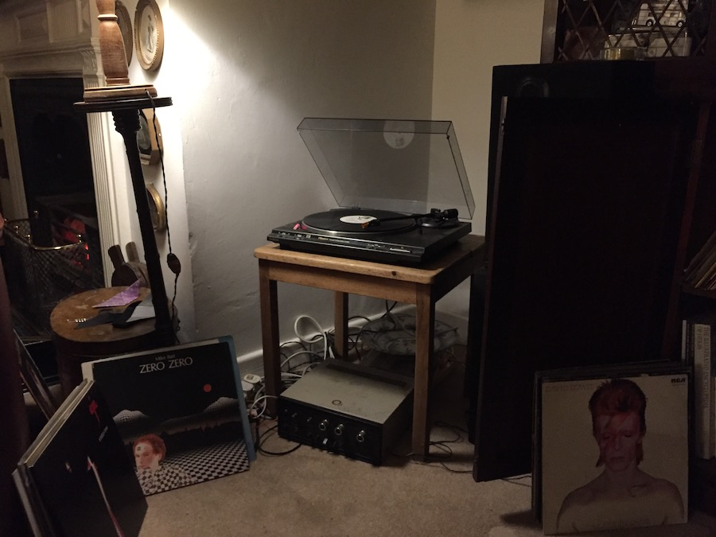
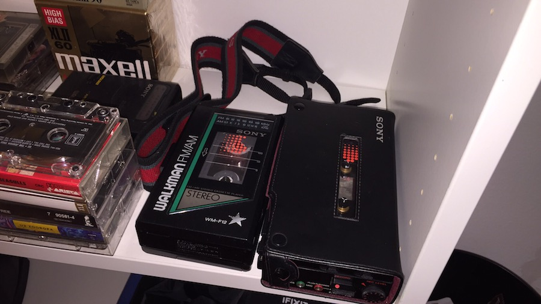
BONUS PICTURE! I found this amazing book about the internet from 1998, here is some web slang ;-D
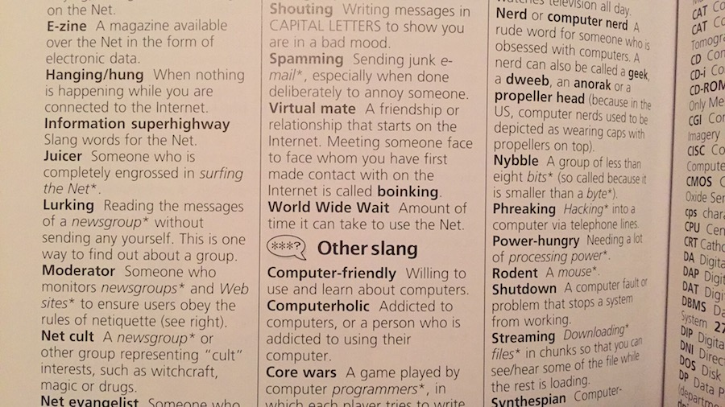
On the plane back I was sitting in the middle of this family of 3 kids, they handled the flight waaayyyyy better than me, plus they gave me toblerone. I arrived back to NY to find Shaun was visiting, which was great! I think it would have been awful to be in the city all alone with my thoughts. We spent the week sightseeing and exploring the city, the first time Iv gotten to hang out with a friend in months! We saw the new Thor Ragnarok movie which is great, but the soundtrack is AWESOME! The macys thanks giving parade happened, which was firggin impossible to see because of all the people, they should really do a second parade just for me. Heres some pictures anyway :P
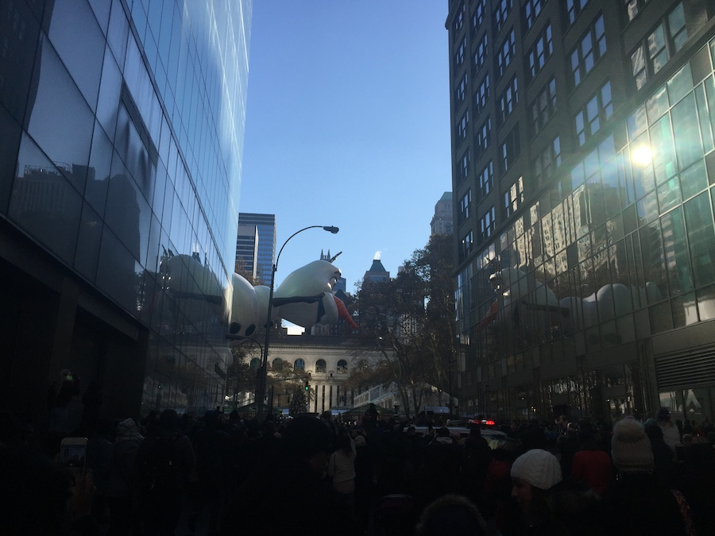
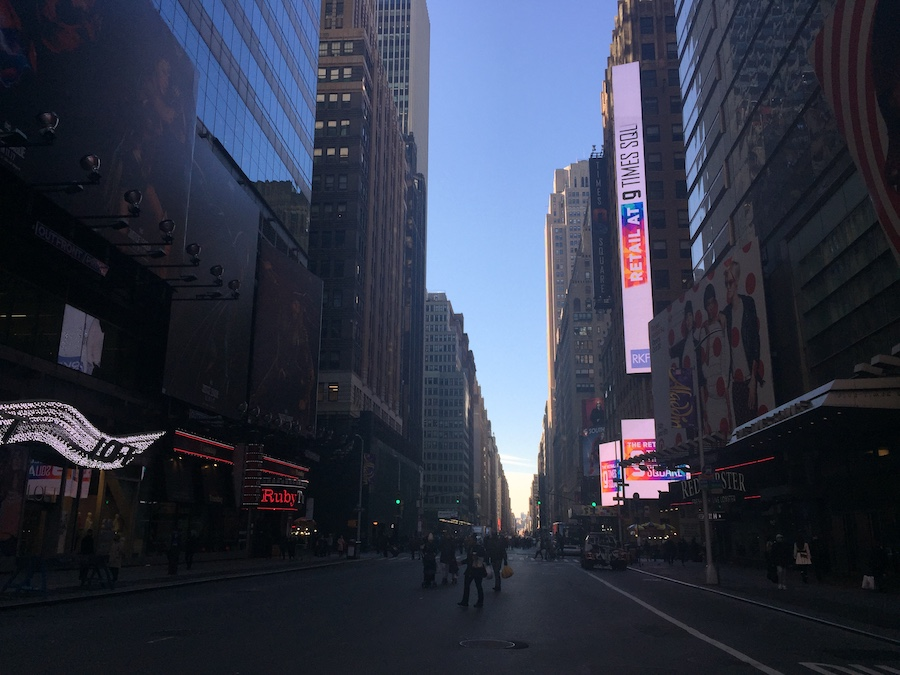
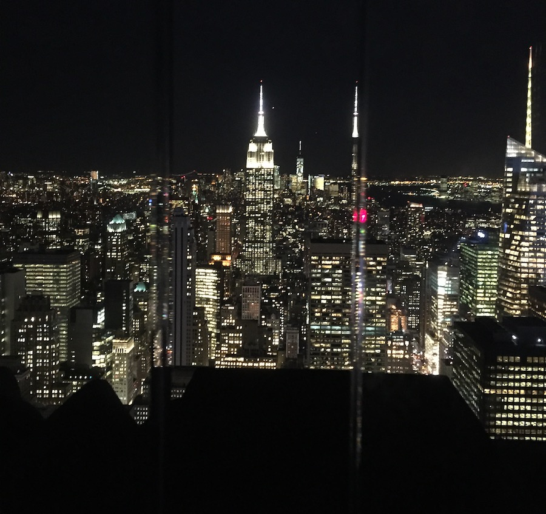
Its 2:30 am, and Iv been writing this for a really long while, but I wanna get it finished tonight. Before next week.
My dad and two aunts spontaneously appeared during the week and we went on a spontaneous trip to the cloisters at the top of Manhattan. Its basically a remade medieval monastery made of bits of imported monasteries in the 1930s. Some of its a bit off, but its a good trip! Heres a dusty picture of a lion.
I guess that brings us up to date. Right now its Sunday night, and my visa officially expires if I don't have an placement by next Thursday, so I have no idea what the future holds. Regardless though it will all work out, I'll make sure of that. This whole trip so far, feels absolutely monumental, you have no idea! Sometimes I wonder what the hell I'm doing, why cant I just get a cushy job at some tech company in Cork and hang out with my friends and get a nice cheap apartment. Why do I put myself through this self induced purgatory when there is such an easy option literally at my doorstep. I suppose the only answer is because I love the monumentalness, the vast impossibility of it all, the potential to be more. I just hope, while Im off chasing dreams that my real world at home does not vanish completely as bits of it already have.